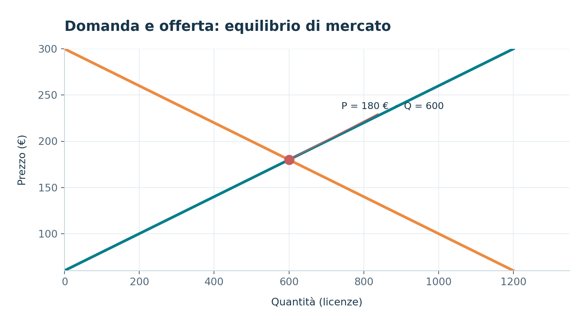
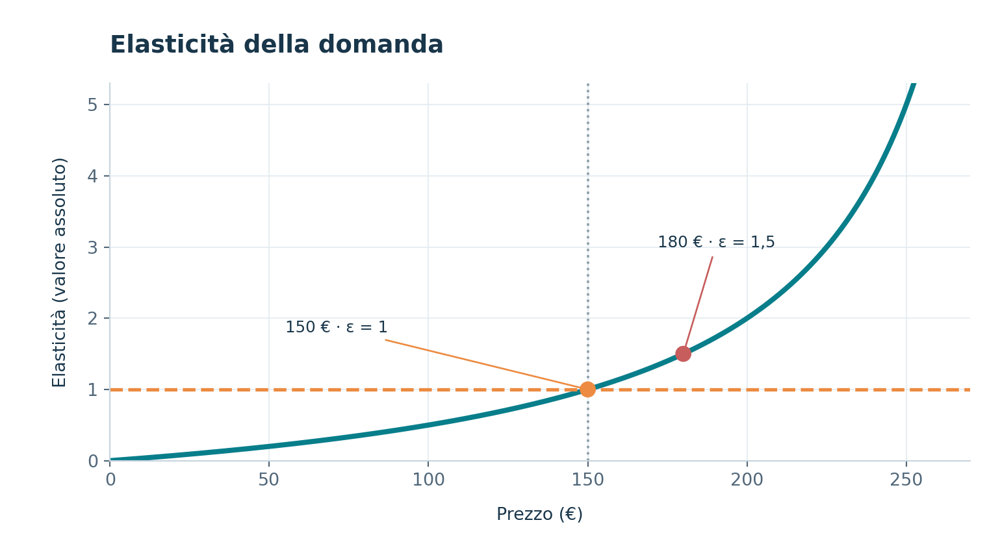
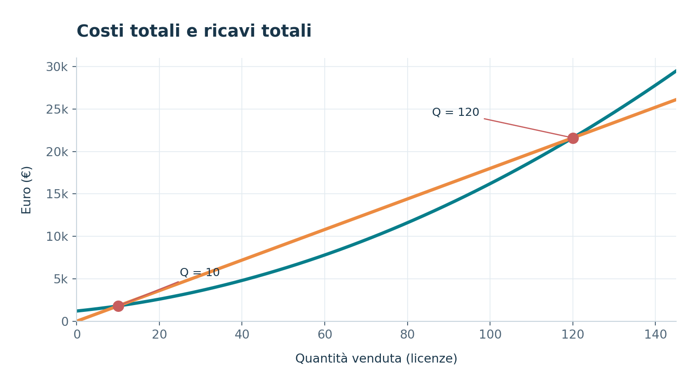
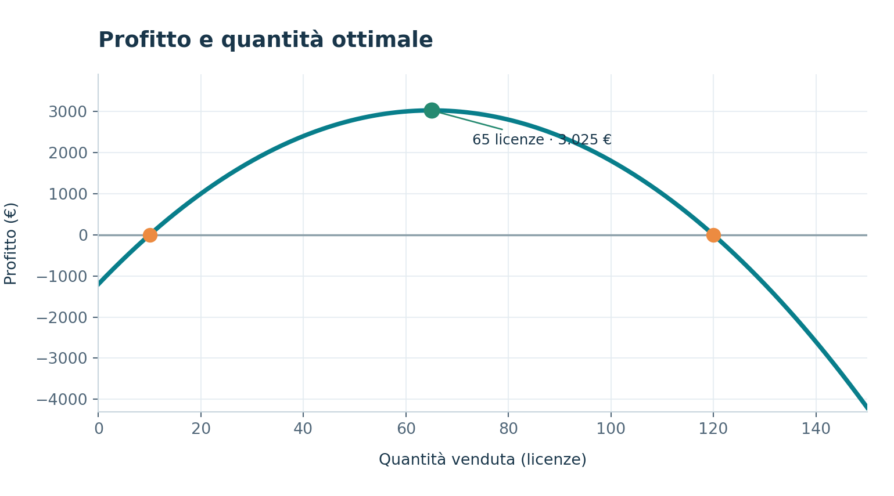
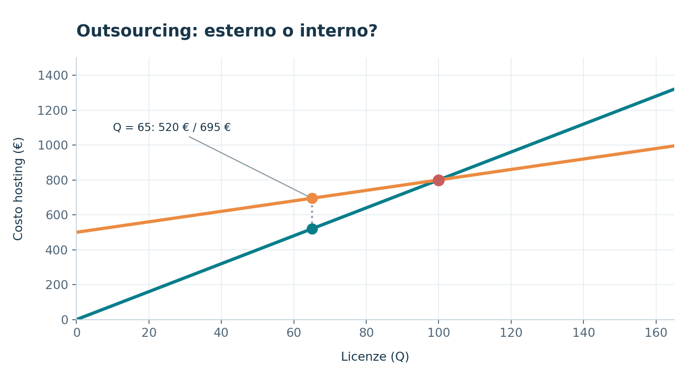
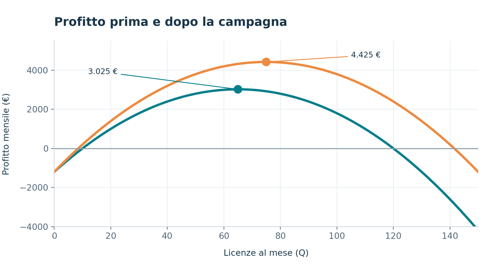

PROGETTO GPO · RELAZIONE ECONOMICA
Il caso CloudGest S.r.l.
Domanda e offerta, costi e profitti, outsourcing e rendimento dell’investimento.
Leggi la relazioneIl caso
CloudGest è una startup informatica che sviluppa un gestionale per magazzini in abbonamento. Vende licenze mensili a piccole imprese. Il CEO ti assume come consulente per rispondere a una serie di decisioni.
DOMANDA E OFFERTA
Domanda e offerta
Prezzo e quantità di equilibrio del mercato

Il grafico rappresenta l'andamento della domanda e dell'offerta di licenze di CloudGest S.r.l. in funzione del prezzo.
La curva della domanda (linea arancione) è decrescente: all'aumentare del prezzo, la quantità di licenze richieste dai clienti diminuisce. Al contrario, la curva dell'offerta (linea blu) è crescente: all'aumentare del prezzo, aumenta la quantità di licenze che i produttori sono disposti a offrire.
Il punto rosso rappresenta l'equilibrio di mercato, che si trova in corrispondenza di un prezzo di 180 € e una quantità di 600 licenze.
In questa situazione, la quantità domandata coincide con quella offerta, evitando situazioni di eccesso di domanda o di offerta.
Di conseguenza CloudGest dovrebbe considerare 180 € come prezzo di riferimento per la vendita delle proprie licenze, poiché rappresenta il prezzo al quale domanda e offerta si incontrano, con una quantità di mercato pari a 600 licenze.
Elasticità della domanda

Il grafico dell'elasticità di domanda riportato qua sotto mostra il cambiamento della domanda all'aumentare del prezzo possiamo notare come:
- Sopra i 150 euro la domanda è elastica (l'aumento dell'1% fa diminuire la domanda di più dell'1%)
- Sotto i 150 è rigida (l'aumento dell'1% fa scendere la domanda di meno dell'1%)
- Quando è a 150 è precisa a 1 il che significa che la domanda e il prezzo cambiano della stessa percentuale (se il prezzo aumenta dell1 % la domanda diminuisce dell'1%)
COSTI, RICAVI E PROFITTO
Costi, ricavi e profitto
Costi e ricavi totali

Il grafico rappresenta il confronto tra l'andamento dei costi totali e quello dei ricavi totali dell'impresa, in funzione della quantità prodotta e venduta.
Si osserva che la curva dei costi totali parte da un valore iniziale di 1.200 €, corrispondente ai costi fissi che l'azienda deve sostenere anche in assenza di produzione. La curva cresce progressivamente con un andamento non lineare, poiché i costi aumentano sempre più rapidamente all'aumentare della quantità prodotta.
La retta dei ricavi totali, invece, parte dall'origine e cresce in maniera lineare. Questo avviene perché il prezzo di vendita rimane costante a 180 € per ogni unità venduta.
Dal confronto tra le due curve emerge che:
- Per quantità inferiori a 10 unità, i costi superano i ricavi e l'impresa registra una perdita.
- A 10 unità prodotte e vendute, ricavi e costi si equivalgono: l'impresa raggiunge il primo punto di pareggio.
- Tra 10 e 120 unità, i ricavi sono superiori ai costi e l'impresa realizza un profitto.
- A 120 unità si raggiunge il secondo punto di pareggio.
- Oltre le 120 unità, i costi tornano a superare i ricavi, generando nuovamente una perdita.
sulla base di queste osservazioni si può osservare come il grafico evidenzia che l'impresa può ottenere risultati positivi producendo una quantità compresa tra 10 e 120 unità; Tuttavia, per massimizzare il guadagno non è sufficiente produrre all'interno di questo intervallo ma sarà necessario individuare la quantità che consente di ottenere il profitto più elevato che è il punto dove le due linee sono più distanti l’una dall’altra e la linea blu sta sotto a quella arancione.
Analisi della Curva di Redditività

in questo grafico è tracciato l'andamento del Profitto, espresso in €, in funzione della Quantità prodotta e venduta (Q).
Dal grafico si nota particolarmente una parabola rovesciata, sintetica delle performance economiche aziendali al variare dei volumi produttivi.
La curva mostra che il profitto parte da valori negativi a bassi volumi, cresce fino a raggiungere un picco massimo, e torna nuovamente in negativo superata la soglia di sostenibilità dei costi.
Il Punto di Ottimizzazione (Massimo Profitto): Il modello evidenzia con il marcatore verde il vertice della parabola, fissato a 65 unità di quantità prodotta, che genera il massimo profitto aziendale pari a 3.025 €.
Questo grafico dimostra chiaramente che incrementare la produzione oltre la soglia ottimale delle 65 unità non solo è inefficiente, ma riduce drasticamente i margini di guadagno fino a produrre perdite nette a causa dell'incidenza dei costi variabili. La gestione operativa deve quindi attenersi rigorosamente al target di volume individuato dal modello.
OUTSOURCING
Scelta dell’hosting
Confronto dei costi di hosting

Questo grafico confronta i costi delle due alternative disponibili per CloudGest: acquistare il servizio di hosting da un fornitore esterno oppure realizzare un data center aziendale.
- Fornitore esterno (blu): il costo è di 8 € per ogni licenza; quindi, aumenta proporzionalmente alla quantità di licenze acquistate.
- Data center interno (arancione): prevede un costo fisso iniziale di 500 € e un costo variabile di 3 € per ogni licenza.
Le due funzioni di costo sono:
Dal grafico si osserva che inizialmente conviene affidarsi al fornitore esterno, perché non richiede costi fissi e presenta una spesa inferiore rispetto alla realizzazione di un data center interno.
Il punto di intersezione tra le due rette si trova in corrispondenza di 100 licenze, con un costo pari a 800 € per entrambe le alternative questo significa che:
- Per quantità inferiori a 100 licenze: conviene il fornitore esterno, perché presenta costi complessivi più bassi.
- Per quantità superiori a 100 licenze: conviene il data center interno, perché il suo costo cresce più lentamente rispetto a quello del fornitore esterno.
Di conseguenza se l'azienda prevede di gestire meno di 100 licenze, è economicamente preferibile continuare ad acquistare il servizio da un fornitore esterno; invece, se prevede di superare le 100 licenze conviene realizzare un data center interno.
Scelta con 65 licenze
Considerando che CloudGest prevede di vendere la quantità di massimo profitto (65 licenze), possiamo confrontare i costi delle due alternative:
Considerando il grafico si osserva che, in corrispondenza della quantità di massimo profitto, pari a 65 licenze, il costo del fornitore esterno è di 520 €, mentre quello del data center interno è di 695 €.
La differenza tra le due alternative è quindi:
695-520=175€
Scegliendo il fornitore esterno, CloudGest risparmierebbe 175 € rispetto alla realizzazione di un data center interno, di conseguenza dovrebbe affidarsi ad un fornitore esterno.
INVESTIMENTO E ROI
Campagna marketing e ROI
1. Analisi dei ricavi e del profitto
CloudGest valuta una campagna marketing dal costo una tantum di 12.000 €, che permette di aumentare il prezzo di vendita da 180 € a 200 € per licenza.
I costi di produzione rimangono invariati, mentre i ricavi aumentano grazie al prezzo di vendita più alto.
Il profitto viene calcolato sottraendo i costi totali dai ricavi:
L'aumento del prezzo consente quindi di raggiungere il massimo profitto vendendo 10 licenze in più rispetto alla situazione iniziale.
2. Commento del grafico
Profitto mensile in funzione della quantità venduta.

Il grafico confronta l'andamento del profitto di CloudGest nelle due situazioni: senza campagna marketing e con campagna marketing.
La curva senza campagna raggiunge il massimo profitto di 3.025 € vendendo 65 licenze, mentre quella con campagna raggiunge un massimo di 4.425 € vendendo 75 licenze.
Si osserva quindi che la campagna marketing sposta verso l'alto il profitto massimo e permette all'azienda di ottenere risultati economici migliori.
La differenza tra i due profitti massimi è:
4425-3025=1400 €
Pertanto, il profitto massimo mensile aumenta di 1.400 €, pari a circa il 46,28%.
3. Calcolo del ROI
Per valutare la convenienza dell'investimento, consideriamo il maggiore profitto mensile e lo proiettiamo su 12 mesi.
Questo significa che, considerando 12 mesi di maggiore profitto, l'investimento genera un rendimento positivo del 40% rispetto alla spesa iniziale.
Dall'analisi emerge che la campagna marketing rappresenta un investimento economicamente conveniente per CloudGest, l'aumento del prezzo di vendita da 180 € a 200 € permette di incrementare il profitto massimo mensile da 3.025 € a 4.425 €, con un miglioramento di 1.400 € al mese avendo un ritorno sull’investimento del 40%.
CONCLUSIONI
Conclusioni e strategia
Conclusioni del Report
Dopo aver analizzato i dati di CloudGest S.r.l., possiamo riassumere i risultati principali e capire quali scelte convengono all'azienda.
- Equilibrio di mercato e prezzo base: Il prezzo di equilibrio è 180 € e la quantità di equilibrio del mercato è 600 licenze. Questo prezzo è il punto di partenza per i calcoli dell'azienda.
- Massimo profitto senza campagna: L'azienda ottiene il profitto mensile più alto, pari a 3.025 €, vendendo 65 licenze.
- Scelta dell'hosting: Con 65 licenze conviene scegliere il fornitore esterno, che costa 520 € invece dei 695 € del data center interno. Il risparmio è di 175 €.
- Campagna marketing: Con il prezzo a 200 €, il profitto massimo mensile diventa 4.425 € vendendo 75 licenze. Il ROI calcolato su 12 mesi è del +40%, quindi la campagna conviene secondo i dati del progetto.
Strategia Consigliata per Aumentare le Vendite
Per aumentare le vendite consiglierei il Versioning, cioè creare versioni diverse del software, per esempio Base, Pro ed Enterprise, con funzioni e prezzi diversi.
Motivazione della scelta:
- Elasticità della domanda: Abbiamo visto che sopra i 150 € la domanda è elastica e sotto è rigida. Con una versione Base più economica si possono raggiungere anche i clienti più sensibili al prezzo, mentre le versioni avanzate possono essere rivolte alle aziende che hanno bisogno di più funzioni e sono disposte a spendere di più.
- Quantità vendute e costi: I calcoli mostrano che non sempre vendere più licenze significa guadagnare di più, perché i costi variabili aumentano. Il Versioning può aiutare ad aumentare il ricavo medio, senza puntare soltanto a vendere molte più licenze.
- Esigenze dei clienti: Offrendo più versioni del gestionale, ogni azienda può scegliere quella più adatta alle proprie necessità. In questo modo CloudGest potrebbe attirare nuovi clienti e migliorare i propri ricavi e profitti.
DICHIARAZIONE
Utilizzo dell’intelligenza artificiale
Per questo progetto è stato utilizzato ChatGPT di OpenAI (modello GPT-6) come supporto allo studio dei concetti economici, alla comprensione dei passaggi matematici, alla verifica e correzione di alcune parti del codice Python e all'organizzazione grafica della relazione.
I grafici, i testi di analisi e i calcoli del progetto sono stati raccolti nel lavoro dello studente; l'intelligenza artificiale è stata utilizzata per chiarimenti, controlli e per migliorare l'impaginazione, comprese la trascrizione delle formule scritte a mano e la revisione stilistica delle conclusioni. Le risposte dell'AI sono state confrontate con la traccia e con il materiale didattico fornito.